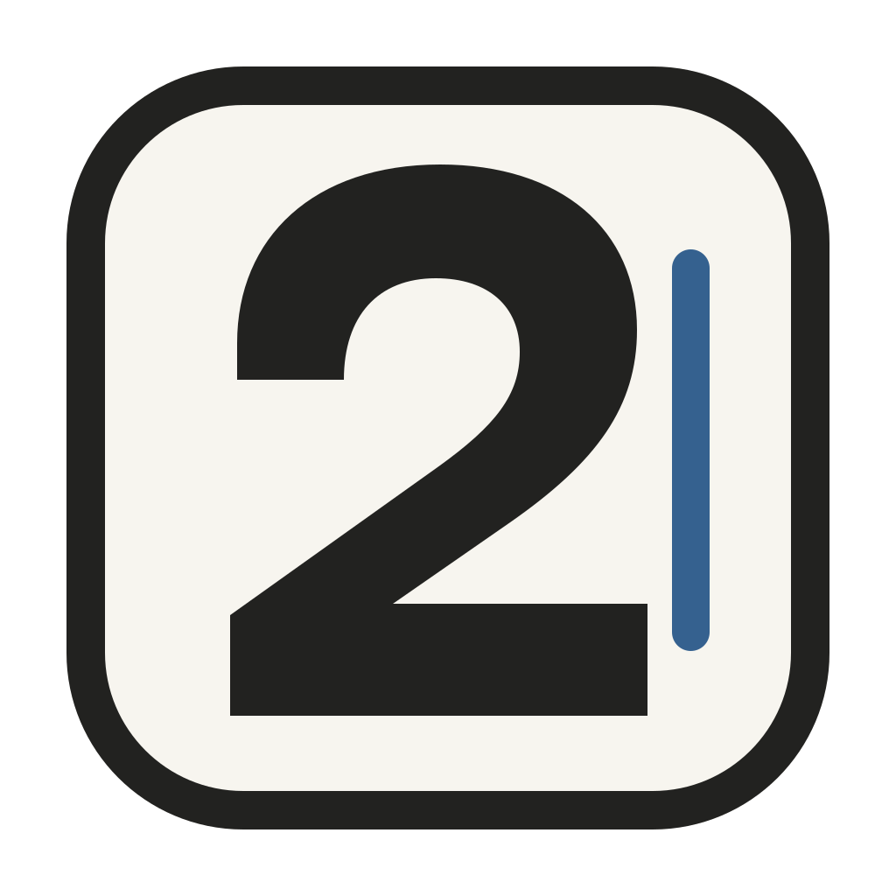

Mac
Apple silicon
For Macs with an Apple M-series chip.
Download for Mac
Second PassFor the changes you can see
Click the words you want to change. Replace an image. Save the page. Second Pass lets you edit HTML directly and keep Codex beside you for the bigger changes.
Mac
For Macs with an Apple M-series chip.
Download for MacMac
For Macs with an Intel processor.
Download for Intel MacWindows
For Windows PCs with Intel or AMD processors.
Download for WindowsMac chip: Apple menu > About This Mac.
Release notes and checksums ↗Initial team release. These installers do not have a verified publisher signature. Follow the first-launch instructions below.
Start here
After trying to open the app, go to System Settings > Privacy & Security and choose Open Anyway for Second Pass. Confirm Open. If asked, allow access to the document you want to edit.
This release has not been notarized by Apple. Use the exception for this app only. Apple's instructions.
If Microsoft Defender SmartScreen says the app is unrecognized, choose More info > Run anyway after confirming the download came from this GitHub repository.
If your company blocks installation, ask IT to approve it. The Windows download is an x64 build; a native ARM installer is not included.
Save the HTML to Documents, then open it in Second Pass. Edit the headline, replace the illustration, and save with Cmd+S on Mac or Ctrl+S on Windows. No account needed.
Work beside Codex
Codex is included. You don't need Node.js or a command-line setup.
An account with Codex access is needed for the connection. Local HTML editing works on its own.
{kind=link}